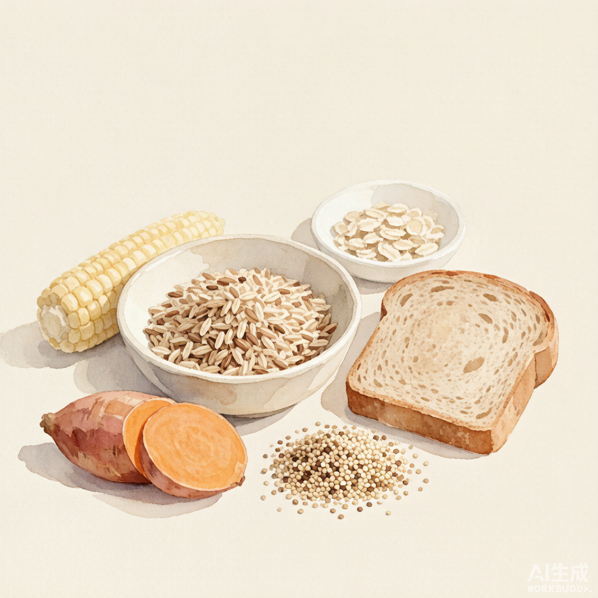
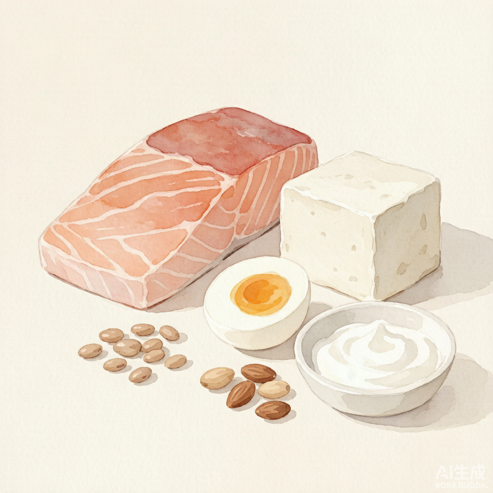
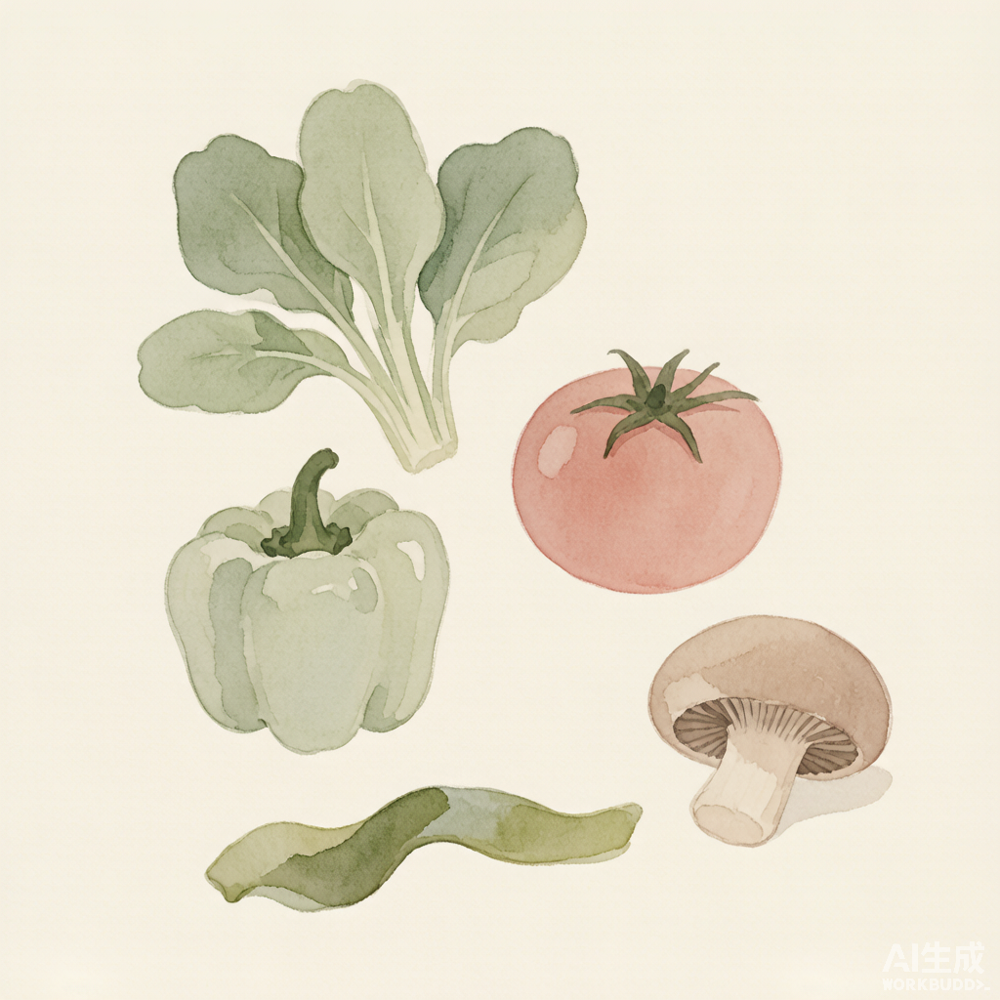

下列食材融合 地中海饮食 与 东方膳食模式（如全谷物、豆制品、薯类、菌菇、海藻等）的健康推荐，统一归入「地中海式健康食材」收藏。均指日常膳食参考，非治疗用途。
主食 · 全谷物与薯类

燕麦富含 β-葡聚糖 可溶性纤维，稳血糖、扛饿，早餐友好（东西方通用）。
糙米保留麸皮胚芽，B 族维生素与膳食纤维高于白米，低 GI。
全麦面包 / 意面地中海餐桌常见主食，选配料表首位为全麦粉者，饱腹感强。
荞麦含 芦丁 等黄酮，对血管友好，东方（中日）传统谷物。
藜麦含完全蛋白、低 GI，原产南美，现属全球健康主食。
红薯 / 紫薯薯类主食，富 β-胡萝卜素 与纤维，东方膳食推荐的粗粮。
玉米粗粮主食，膳食纤维丰富，蒸煮皆可。
小米东方传统养胃谷物，B 族丰富，易消化。
青稞高原谷物，β-葡聚糖 含量高，东方特色粗粮。
杂豆（红豆/绿豆/鹰嘴豆）可部分替代主食，又补植物蛋白与纤维。
蛋白质 · 海陆兼修

三文鱼 / 沙丁鱼地中海核心，富含 Omega-3 抗炎、护心脑。
虾 / 鱼类优质低脂蛋白，易吸收，补微量元素。
鸡蛋高生物价蛋白，性价比之王，每天 1 个无负担。
豆制品（豆腐/豆浆/纳豆）东方膳食核心，植物蛋白 + 大豆异黄酮，对女性友好。
瘦肉（鸡胸 / 牛肉）补铁补蛋白，预防贫血与肌肉流失。
无糖酸奶 / 希腊酸奶益生菌 + 钙，护肠又护骨。
坚果种子（核桃/杏仁/芝麻/奇亚籽）好脂肪 + 维 E，每日一小把即可。
奶酪（适量）地中海常用补钙食物，选天然发酵、少盐款。
小鱼小虾 / 贝类连骨吃可补钙，富锌硒。
蔬菜 · 五色入餐

深绿叶菜（菠菜/西兰花/油菜）叶酸、维 K、镁，东西方共推的「基础蔬菜」。
番茄含 番茄红素 抗氧化，地中海标志性蔬菜，熟吃更利吸收。
彩椒维 C 丰富，颜色越艳营养密度越高。
胡萝卜β-胡萝卜素，护眼护皮肤。
菌菇（香菇/木耳/金针菇）东方膳食重要成员，含多糖与膳食纤维，提鲜又低卡。
十字花科（甘蓝/菜花/芥蓝）含硫苷类物质，有助正常代谢。
紫甘蓝花青素抗氧化，凉拌生食保留更多营养。
茄子地中海常见，少油清蒸 / 烤制更健康。
海藻（海带/紫菜/裙带菜）东方膳食特色，富碘与褐藻多糖，凉拌做汤皆宜。
黄瓜 / 冬瓜高水分、低热量，清热利水，减脂期友好。
模块参考资料：腾讯医典《抗衰老的食物有哪些》《地中海饮食是什么》；ima知识库·营养百科（《中国居民膳食指南2022》《中国营养科学全书》）；东方膳食模式（全谷物、豆制品、薯类、菌藻）相关科普。